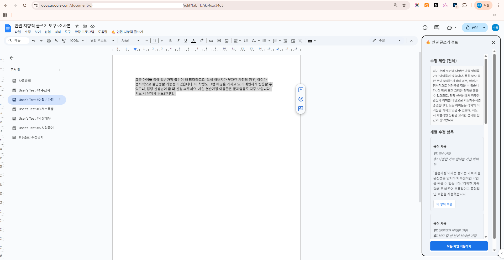

구글 Docs 내부에서 AI의 도움을 받아 내가 쓴 글에 차별이나 혐오 표현, 성인지 감수성 결여가 없는지 실시간으로 점검하고 교정해주는 도구입니다. 사회복지 현장에서 작성하는 다양한 보고서에 인권 지향적 가치를 담을 수 있도록 돕습니다.
⚖️
인권 감수성 교정
선택한 텍스트에서 개선이 필요한 표현을 찾아 대안을 제시합니다.
⌨️
Docs 메뉴 통합
별도의 사이트에 들어갈 필요 없이 구글 문서 상단 메뉴에서 바로 실행 가능합니다.

구글 문서 내 메뉴 구동 화면